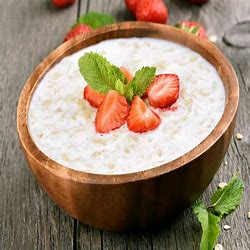
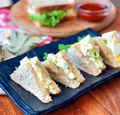
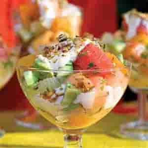
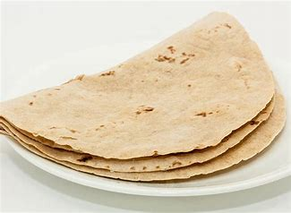
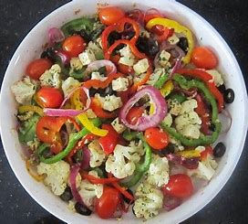

PREPARATION


Vegetable Sandwich
Ingredients------
1)tomato 2)cheese 3)bread 4)leaf 5)Ketup 6)Mayonnaise 6)Chily sauce,onion sauce (optional)Method-----
Take a bread .Add ketup and mayonnaise to both side of bread by spoon .Then add cheese .tomato and leaf .Close the bread.Heat it in microven for 1 min .Cut the bread in triangle shpe. Finally serve it .A Reference Video Of Making Vegetable Sandwhich
A video of preparing mayonnaise vegetable sandwhich

Custard Fruit
Ingredients------
1)2 apples (cut to small pieces) 2)1 plate ofgrapes 3)2 banana 4)3 kiwi 5)2 mango 6) 1 cup custard milk 7)sugar optionalMethod-----
Take a plate .Mix all fruits (apples,grapes,banana,kiwi,mango) .after that mix custard milk .Make the mix as tight . Add sugar if needed .Keep in refrigerator to cool .Serve it to plate.A video of preparing fruit custard

Chapati
Ingredients------
1) 1 cup wheat flour 2)1 cup all-purpose flour 3)1 half teaspoon salt 4)1tablespoons oil or ghee 5) ¾ cup hot water or as needed .(hot water highly recommeded if not use medium water donot use cold water.)Method-----
Take a plate .Mix wheat flour,all purpose flour ,salt (needed) . Add water(hot or medium ) until the mix becomes tight .Roll the mix into small balls by using hand .Close the lid and keep it for 2 hours atleast to get soften .Then after 2 hrs take the mix .Take the balls flaten it as possible .Heat the pan to 2 to 3 min .Put the flaten chapati to pan .When turning to slight brown color turn the chapati to other side to cook other side .After that serve it to plate.A video of preparing chapati
OMELET
Ingredients---
1 tsp oil pinch pepper, pinch salt, 2 eggs (for 2 peoples) half tomato, 1 spinach, 1 onion.Method-----
Brush frying pan with oil, add the pepper and heat for 2 minutes (until oil becomes heat). Ontime, beat eggs in cup or plate and add pepper and salt accordingly. Pour mix into frypan, add the balance ingredients tomatoes ,spinach,onion and close a lid and cook for 2 minutes, until the mixture starts to soft on top. then fold omelette in half and or cook until golden brown turns.Serve in a plate,A video of preparing fruit custard
